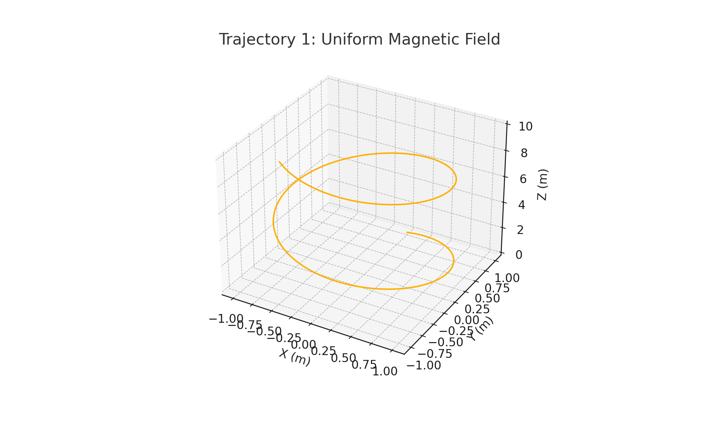
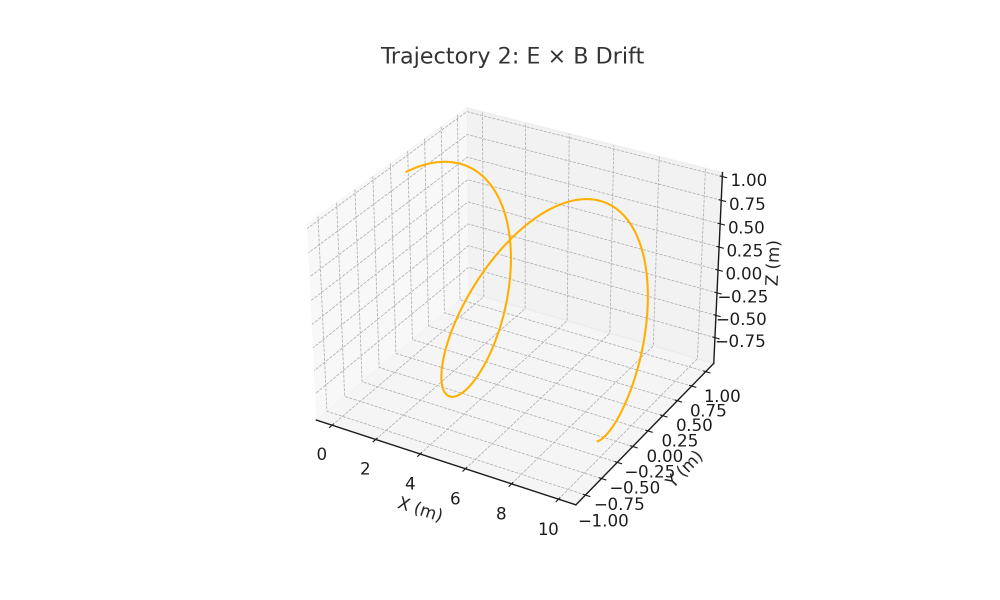
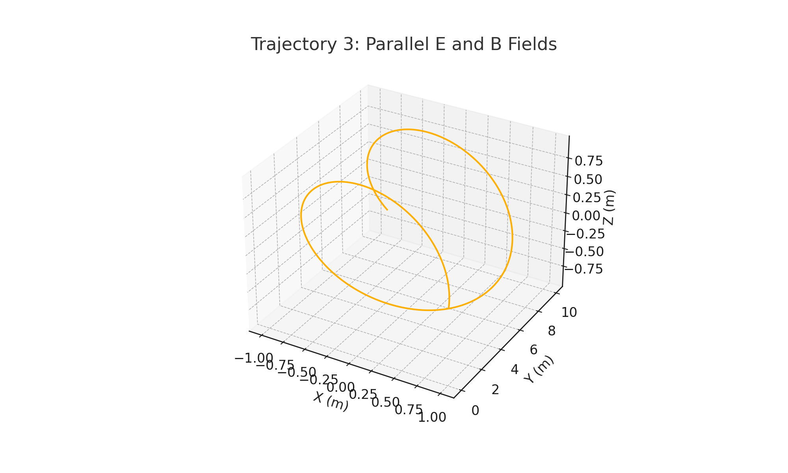

Problem 1: Simulating the Effects of the Lorentz Force
1. Introduction and Motivation
The Lorentz force governs the motion of charged particles under electric and magnetic fields. It is one of the most fundamental principles in electromagnetism and plays a critical role in systems ranging from fusion reactors and particle accelerators to space weather and auroras.
This force combines the influence of both the electric field \( \vec{E} \), which causes linear acceleration, and the magnetic field \( \vec{B} \), which causes the particle to curve. Its effects are non-trivial and often counter-intuitive, especially in three-dimensional settings.
Simulating the motion of particles under this force helps us to understand and visualize physical phenomena in: - Magnetic plasma confinement, - Mass spectrometry, - Electromagnetic wave interactions, - Cyclotron operation, and more.
2. Theory and Mathematical Framework
Lorentz Force Decomposition
For a particle of charge \( q \), mass \( m \), and velocity \( \vec{v} \), the total force \( \vec{F} \) is the vector sum of: - The electric force: \( q\vec{E} \), - The magnetic force: \( q\vec{v} \times \vec{B} \).
This yields the second-order differential equation:
Numerical methods (such as the Euler method) are used to solve this equation and simulate the trajectory \( \vec{r}(t) \) over time.
Circular and Helical Motion
When \( \vec{E} = 0 \), the magnetic field causes the particle to move in a circular path if \( \vec{v} \perp \vec{B} \), or in a helix if \( \vec{v} \) also has a component along \( \vec{B} \).
Key equations:
- Larmor radius:
[
r_L = \frac{mv_\perp}{|q|B}
]
-
Cyclotron frequency:
[ \omega_c = \frac{|q|B}{m} ] -
E × B drift velocity (when \( \vec{E} \perp \vec{B} \)):
[ \vec{v}_{\text{drift}} = \frac{\vec{E} \times \vec{B}}{B^2} ]
3. Simulation Methodology
We consider three different configurations of electric and magnetic fields:
| Case | Electric Field \( \vec{E} \) | Magnetic Field \( \vec{B} \) | Velocity \( \vec{v}_0 \) |
|---|---|---|---|
| 1 | [0, 0, 0] | [0, 0, 1] T | [10^6, 0, 0] m/s |
| 2 | [10^5, 0, 0] | [0, 0, 1] T | [0, 10^6, 0] m/s |
| 3 | [0, 0, 10^5] | [0, 0, 1] T | [10^6, 0, 0] m/s |
- Method: Euler integration.
- Time step: \( \Delta t = 10^{-11} \) s
- Number of steps: 2000
- Particle: Electron (\( q = -1.6 \times 10^{-19} \) C, \( m = 9.11 \times 10^{-31} \) kg)
4. Visualization of Results
Case 1: Motion in a Uniform Magnetic Field
Trajectory: Circular/Helical Motion

Case 2: Crossed Electric and Magnetic Fields
Trajectory: Helical Path + Drift (E × B)

Case 3: Parallel Electric and Magnetic Fields
Trajectory: Accelerated Helix

5. Physical Interpretation and Application
| System | Relevance of Lorentz Force |
|---|---|
| Cyclotron | Circular motion from \( \vec{v} \perp \vec{B} \) |
| Mass Spectrometer | Particle deflection reveals mass-to-charge ratio |
| Tokamak Fusion Reactor | Plasma held in place via spiral confinement |
| Auroras | Charged particles spiral along Earth’s field lines |
| Cathode Ray Tube (CRT) | Magnetic deflection creates image projection |
6. Conclusion
Through this simulation, we gain an intuitive and mathematical understanding of: - How field configurations alter motion, - Why cyclotrons and fusion devices depend on magnetic confinement, - The physical basis for phenomena like E × B drift and Larmor motion.
Simulating Lorentz-force-driven dynamics demonstrates the power of physics-informed computation in modeling complex systems — from charged particles in labs to space plasmas in the cosmos.